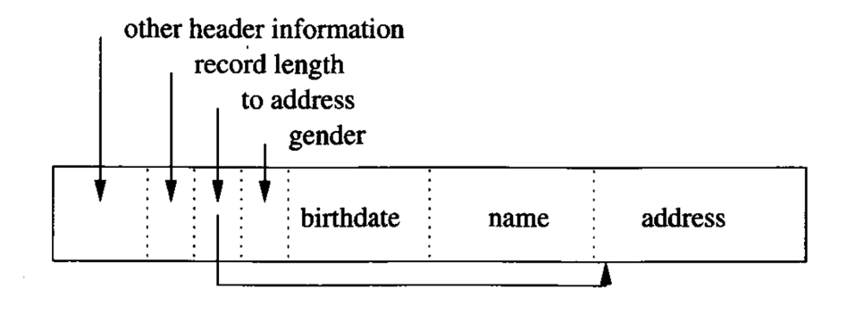

Database Storage Structure
本文最后更新于：June 2, 2022 pm
Database Storage Structure
本文介绍数据库在磁盘上的存储格式与层次:Table->Block->Record
Record Structure
数据在磁盘上布局的基本单位:record;对关系型数据库而言，一条record就是对应关系中的一行，而对NoSQL数据库而言，record并不是数据存储的唯一方式。
定长record
如果一条record的长度是固定值时，数据库存储起来会比较容易，并且record的结构也会相对简单。如下面定长record图所示，record分为两大部分:header和data;
如图所示:record的前端为header，后部分为data部分。其中header内包含了to schema、整条record长度、时戳等信息，其中schema可以简单理解为record的是表ID属性，但其实并不准确，后续会详细介绍schema的概念，而to schema是指向该record对应的schema的指针或者其他一些访问方式，不同数据库的实现方式具有一定不同。data部分则是直接将字段值按顺序存放，而没有其他的间隔或者区分方式，这是因为schema中保存了不同字段的长度，在需要解析的时候可以根据schema把需要的字段直接定位出来。
变长record
但在实际使用中record为定长的可能性比较低，因为很可能会存在某字段需要使用不同长度的变量来描述，同时因为field为变长，record也必须是变长的。下面是一张关于变长record可能的结构图。

可以看到，与定长record相似，都是分为header和data部分。header部分与定长record相同，都是一些record的信息，如to schema整条record的长度和时戳等，但是data部分与定长record却有较大的不同，变长record在存放具体字段值时与定长record相同，并没有采用特殊的分隔符等操作，但是在存放之前有一段指针数组，其中存放的时指向不同字段起始位置的指针，值得强调的是:这里说的指针并非内存中的指针，而是相对偏移量。通过这个偏移量数组即可确定不同字段的长度和内容从而做到识别字段。
除了record中有变长字段的情况，还有一种情况也会导致record为变长record——具有重复字段，如下图所示:name、address都是定长字段，而movies也是定长字段，但特殊的是在record中可能会出现多个movies的情况，因此record也无法是一个定长的record而是一条变长record来保证上述情况的保存。
解决方案与具有变长字段类型，就是在data部分增加一个指针数组，指向不同的字段起始位置来区别不同字段。如果从变长字段的角度来理解的话，则movies不再是一个定长字段而是一个变长字段，这样有重复字段的处理方式其实与有变长字段的处理方式是一模一样的。
在变长record中还有一种情况——变字段record，即是一条record对应的字段数量、字段类型和字段含义是不相同的，而是record中具有一定的自解释能力，严格来说这已经不再属于关系型数据库的范围，因此在这里不做详细展开。
My Record Implementation
该记录为数据库原理与实现课程老师给出雏形，后参照InnoDB和MySQL的实现设计而成。具体如图所示:
其中header为固定的1Byte大小，其结构为:
特别说明:
- 上图虽然header放在offset数组后面，但在代码实际实现中，header仍然位于record的最前方，而其他相对位置不变。
- 当Record删除时，其占据的空间不会立刻被回收，而是仅仅把Record的Header中tombstone标记为死亡，当空间不足时，才会被回收。
Block Structure
Block是数据库的基本IO单位，当进程需要调用数据库中的record的时，至少需要调入一整个Block而无法仅仅访问一个record。
简单Block实现

如图所示:Block一般由header和record构成，头部主要包含指向后继Block的指针，标记记录是否延续到下一个block，时戳，剩余空间大小，剩余空间起始位置等关键信息。而record区则是一个变长的数组，其中每一个元素都是一个完整的record。
相对复杂但更合理的Block实现
上图是Block的另一种可行的Block实现方案，前部分与简单Block相同，都是有着header和record区，但是在record区域后方，这里相比简单Block，添加了一个tail来为record的数组进行排序，具体排序实现在My Block Implementation中进行详细说明。在record数组和tail之间存在free space，当有新record插入时，record数组向后延伸，而tail则向前延伸，从而压缩free space空间。
My Block Implementation
由上图可以看见，Block的结构为：Block Header + Data Header + Data + Free Space + Slots + Trailer。其中Slots和Trailer共同作为tail。
因为Block存在不同的类型，在实现时采用了基类和派生类的方法来进行不同Block的实现，uml图如下:
其中Block作为基类，派生出了SuperBlock和MetaBlock类，而DataBlock为MetaBlock的直接派生。至于为什么要设置SuperBlock和MetaBlock具体原因可以参考下面对Table的设计。而不同类型Block的主要区别在于Header部分的不同，也就是上面图My Block中Data/Index Header与Data/Index部分体现出的不同。其中Common Header实现如下所示:
1 | |
- magic为魔数，编码为小端时
0x31306264，大端时为0x64623031，可用来判断Block是否损坏和防止缓冲区攻击。 - spaceid用以标记该Block属于的表空间。
- type用来说明当前Block的类型，可选项有:IdleBlock,SuperBlock,DataBlock,IndexBlock,MetaBlock以及LogBlock，其中MetaBlock与DataBlock的Header部分完全相同(DataBlock是MetaBlock的子类)。
- freespace是空闲链表开始位置的偏移量，当有新的Record插入时，会根据freespace当前位置到slots数组之间的空间来分配空间，如果空间足够则将Record插入到freespace下需要的空间内，freespace下移;若freespace下到slots数组之间的空间不足并且freesize大于需要的空间，Block需要去将已经被删除了的Record空间回收回来并将freespace上部空闲空间进行挤压，然后重新确定freespace的偏移量。注意:因为回收死亡Record空间是开销很大的操作，因此当freespace还没有到达slots数组或者无法为新的Record分配空间时，不会进行回收。
tail的实现则更为简单。每一个Block的tail由两部分组成:slots数组和Trailer，slots数组在下面会详细介绍，而Trailer中仅有checksum一个变量类型为unsigned int作为校验和来保证Block的安全性。
以下将仅介绍最重要和最常见的Block类型:DataBlock，其他Block暂时并不重要。其中SuperBlock作为Table管理Block的工具将会在Table的结构中介绍。
1 | |
- 因为目前没有说到Table是如何组织不同Block间的关系，这里简单的提一下:在一个Table中一个是由一个单向链表来组织所有的Block，而SuperBlock则是链表的表头，每一个Block都是一个Node，Block中的next为下一个Block的id。
- DataHeader中的slots为当前Block中slots数组的长度而不是指向slots数组的指针，因为在Block结构图中可以看到，slots数组一定在Block的尾部，只需要根据Block的大小定位到最后一位然后向前移动一个
unsigned int的大小即可找到slots数组，而头部只需要提供当前Block中有多少个slots也就是当前Block中有多少个Record来方便使用。
因为上面一直在讲slots数组但没有具体说明Slot到底是个啥，接下来先将Slot的概念叙述清楚。
1 | |
slots数组是对应Block中的每一个Record在Block中的位置。Slot为Record在Block中的一个定位信息，而slots数组则是将所有Record的Slot放在一起并根据主键的大小进行排序，当需要在Block中定位Record时，只需要通过二分查找或者遍历的方法在slots数组中寻找到对应的Slot即可定位到目标Record的位置。Slot的定位方法还是通过Record相对于Block开始位置的偏移量来实现的，不过在Slot中还包含了Record的大小，这个可以为其他很多功能提供一个快速工具。
本博客所有文章除特别声明外，均采用 CC BY-SA 4.0 协议 ，转载请注明出处！